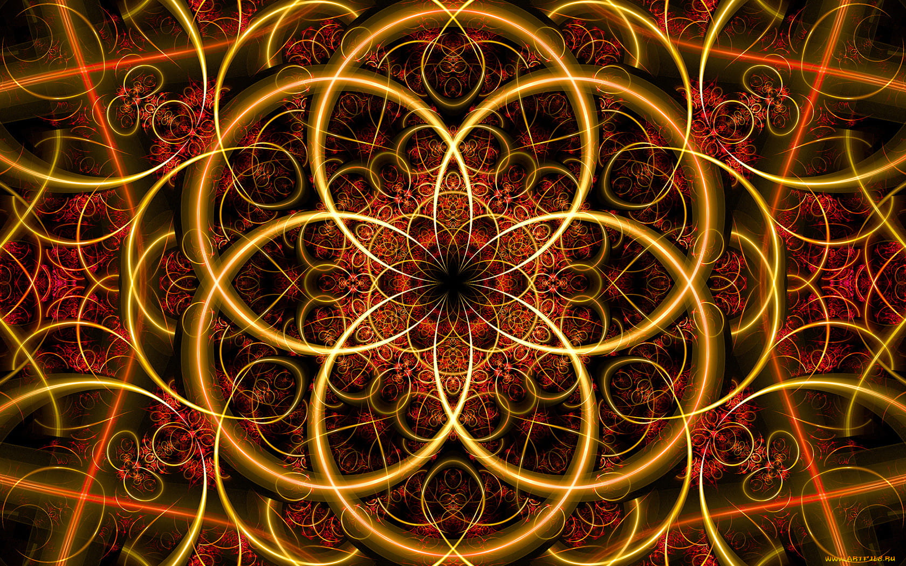
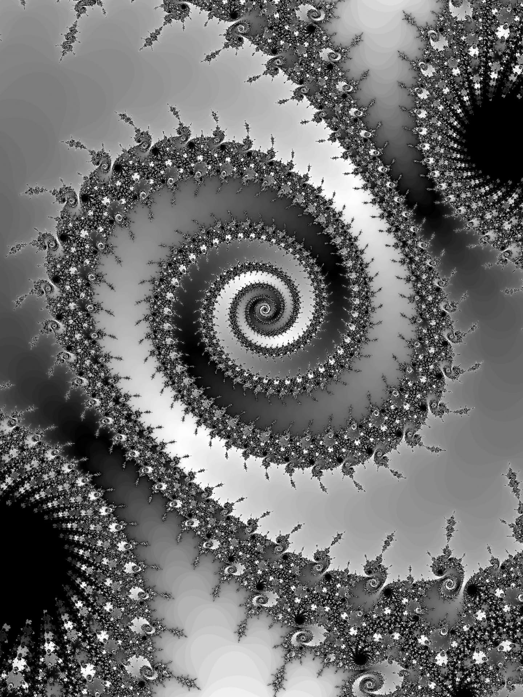
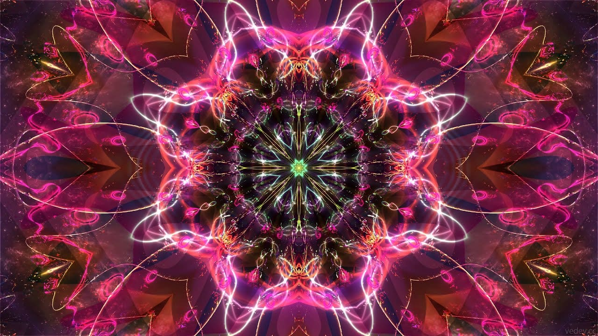

Фракталы
Что такое фракталы?
Фрактал — это геометрическая фигура, определенная часть которой повторяется снова и снова, изменяясь в размерах. Отсюда следует принцип самоподобия. Все фракталы подобны самим себе, то есть они похожи на всех уровнях.
Фракталы известны уже почти век, хорошо изучены и имеют многочисленные приложения в жизни. Однако в основе этого явления лежит очень простая идея: бесконечное по красоте и разнообразию множество фигур можно получить из относительно простых конструкций при помощи всего двух операций — копирования и масштабирования.
Что общего у дерева, берега моря, облака или кровеносных сосудов у нас в руке?
На первый взгляд может показаться, что все эти объекты ничто не объединяет. Однако на самом деле существует одно свойство структуры, присущее всем перечисленным предметам: они самоподобны. От ветки, как и от ствола дерева, отходят отростки поменьше, от них — еще меньшие, и т. д., то есть ветка подобна всему дереву. Подобным же образом устроена и кровеносная система: от артерий отходят артериолы, а от них — мельчайшие капилляры, по которым кислород поступает в органы и ткани. Посмотрим на космические снимки морского побережья: мы увидим заливы и полуострова; взглянем на него же, но с высоты птичьего полета: нам будут видны бухты и мысы; теперь представим себе, что мы стоим на пляже и смотрим себе под ноги: всегда найдутся камешки, которые дальше выдаются в воду, чем остальные. То есть береговая линия при увеличении масштаба остается похожей на саму себя. Это свойство объектов американский (правда, выросший во Франции) математик Бенуа Мандельброт назвал фрактальностью, а сами такие объекты — фракталами (от латинского fractus — изломанный).

Одним из основных свойств фракталов является самоподобие. Размерность объекта показывает по какому закону растет его внутренняя область. Аналогичным образом возрастает «объем» фрактала с ростом его размеров, но его размерность — величина не целая, а дробная. Поэтому граница фрактальной фигуры не линия: при большом увеличении становится видно, что она размыта и вся состоит из спиралей и завитков, повторяющих в малом масштабе саму фигуру.
Что такое фрактал?
У этого понятия нет строгого определения. Поэтому слово «фрактал» не является математическим термином. Обычно фракталом называют геометрическую фигуру, которая удовлетворяет одному или нескольким из следующих свойств:
- Обладает сложной структурой при любом увеличении масштаба (в отличие от, например, прямой, любая часть которой является простейшей геометрической фигурой — отрезком).
- Является (приближенно) самоподобной.
- Обладает дробной хаусдорфовой (фрактальной) размерностью, которая больше топологической.
- Может быть построена рекурсивными процедурами.

Типы фракталов
Фракталы делятся на геометрические фракталы, алгебраические фракталы, системы итерируемых функций, стохастические фракталы
Геометрические фракталы
История создания фракталов началась с геометрических фракталов. Этот тип фракталов получается путем простых геометрических построений. При построении данных видов фракталов поступают так: берется набор отрезков, на основании которых будет строиться фрактал. Затем к ним применяется набор правил, который преобразует их в некоторую геометрическую фигуру. И потом к каждой части этой фигуры применяют этот же набор правил. С каждым шагом фигура становится все сложнее и после бесконечного количества преобразований получается геометрический фрактал.
Из геометрических фракталов очень интересным и знаменитым является снежинка Коха, которая строится на основе равностороннего треугольника. Каждая линия треугольника заменяется на 4 линии длиной в 1/3 исходной _/\_. Таким образом, длина кривой увеличивается на треть. Если сделать бесконечное число таких шагов, то получится фрактал — снежинка Коха бесконечной длины.
Алгебраические фракталы
Вторая группа фракталов — алгебраические фракталы. Они получили свое название за то, что строятся на основе алгебраических формул. Существует несколько методов получения алгебраических фракталов. Один из них представляет собой многократный расчет функции Zn+1=f(Zn), где Z — комплексное число, а f — некоторая функция. Для построения фрактала необходимы комплексные числа. Комплексное число — это число вида a+bi, состоящее из действительной и мнимой частей. Комплексное число можно изобразить точкой на координатной плоскости, у которой действительная часть a — это координата Х, а коэффициент b при мнимой части — это координата Y.
Фрактальные размерности
Как известно, размерность (число измерений) геометрической фигуры — это число координат, необходимых для определения положения лежащей на этой фигуре точки.
Например, положение точки на кривой определяется одной координатой, на поверхности (не обязательно плоскости) двумя координатами, в трёхмерном пространстве тремя координатами.
С более общей математической точки зрения, можно определить размерность таким образом: увеличение линейных размеров, скажем, в два раза, для одномерных (с топологической точки зрения) объектов (отрезок) приводит к увеличению размера (длины) в два раза, для двумерных (квадрат) такое же увеличение линейных размеров приводит к увеличению размера (площади) в 4 раза, для трехмерных (куб) — в 8 раз. То есть «реальную» (т.н. Хаусдорфову) размерность можно подсчитать в виде отношения логарифма увеличения «размера» объекта к логарифму увеличения его линейного размера. То есть для отрезка D=log (2)/log (2)=1, для плоскости D=log (4)/log (2)=2, для объема D=log (8)/log (2)=3.
Подсчитаем теперь размерность кривой Коха, для построения которой единичный отрезок делят на три равные части и заменяют средний интервал равносторонним треугольником без этого сегмента. При увеличении линейных размеров минимального отрезка в три раза длина кривой Коха возрастает в log (4)/log (3)~1,26. То есть размерность кривой Коха — дробная!
Фракталы и жизнь

В наши дни теория фракталов находит широкое применение в различных областях человеческой деятельности. Помимо чисто научного объекта для исследований и уже упоминавшейся фрактальной живописи, фракталы используются в теории информации для сжатия графических данных (здесь в основном применяется свойство самоподобия фракталов — ведь чтобы запомнить небольшой фрагмент рисунка и преобразования, с помощью которых можно получить остальные части, требуется гораздо меньше памяти, чем для хранения всего файла).
Добавляя в формулы, задающие фрактал, случайные возмущения, можно получить стохастические фракталы, которые весьма правдоподобно передают некоторые реальные объекты — элементы рельефа, поверхность водоемов, некоторые растения, что с успехом применяется в физике, географии и компьютерной графике для достижения большего сходства моделируемых предметов с настоящими.
В радиоэлектронике в последнее десятилетие начали выпускать антенны, имеющие фрактальную форму. Занимая мало места, они обеспечивают вполне качественный прием сигнала.
Экономисты используют фракталы для описания кривых колебания курсов валют (это свойство было открыто Мандельбротом более 30 лет назад). На этом мы завершим эту небольшую экскурсию в удивительный по красоте и разнообразию мир фракталов.